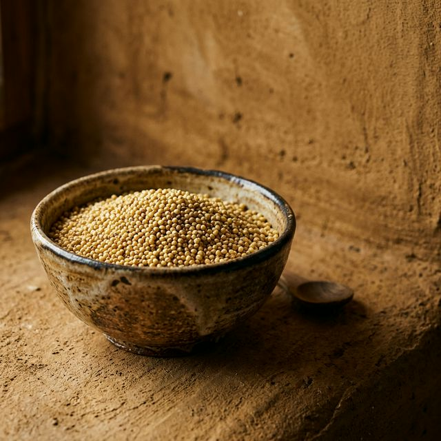

Brown rice has long been championed as the healthy alternative to white rice. But how does it fare when stacked against a native ancient grain like Kodo Millet?
While brown rice offers around 3 grams of dietary fiber per 100g, Kodo Millet delivers a staggering 9 grams of dietary fiber. Furthermore, the protein profile of Kodo is far superior, clocking in at 8.3g with a much better array of essential amino acids.
Crucially, Kodo millet boasts a significantly lower glycemic index. For anyone monitoring their blood sugar, making the switch from brown rice to Kodo is a powerful metabolic upgrade that doesn't compromise on the comforting texture of a hearty grain bowl.